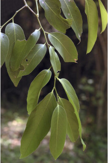
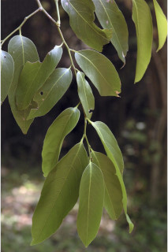

Images :


 



| Habit : | Trees up to 8 m tall. |
| Leaves : | Leaves simple , alternate , distichous ; petiole 0.7-1.6 cm long, swollen at both ends, canaliculate , glabrous ; lamina 9-26 x 2.5-8.5 cm, usually lanceolate , apex gradually acuminate or subacute , base rounded or acute , sometimes subattenuate , margin entire , coriaceous , glabrous ; midrib raised above; secondary_nerves 6-11 pairs, ascending towards apex ; tertiary_nerves reticulo-percurrent . |
| Inflorescence / Flower : | Flowers unisexual , solitary or in short fascicles , white. |
| Fruit and Seed : | Berry , globose , to 6.5 cm across, brown tomentose , pericarp woody ; seeds numerous . |